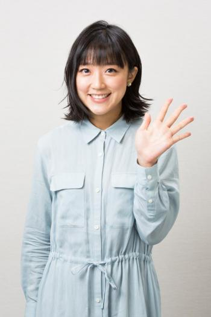
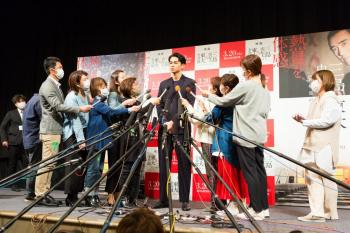

元テレ朝・竹内由恵さん、一度離れたテレビの世界。3カ月復帰を決めた理由
――フリーの選択ができるのも20代で頑張った経験があるからでしょうか。
退社するときもフリーになると決めたときも、ためらいや不安はありました。お世話になった方への申し訳なさや一緒に番組を作っている人たちに迷惑をかけてしまうという気持ち、自分自身の先も見えませんでした。ただ、一歩踏み出したことで、みんなが理解してくれていることに気付けたり、フリーの選択肢が見えたり。テレビ朝日でやれることはすべてやり切ったという思いもあります。だからフリーに飛び込めたのかもしれません。今は色んなことができる代わりに、自分に伴う責任も大きくなる。厳しい世界だけど、挑戦しようと思えるのはテレビ朝日での経験のおかげです。
――今後はどういう仕事をやっていきたいですか。
自分自身をさらけ出す挑戦をしていきたいです。局アナ時代は場の空気を読んで進行する“アナウンサーの仕事”を全うすることに集中していました。それがいい部分もありますが、ちょっと勇気を出して「こうでなければいけない」という型から出てみようかなと思っています。
――憧れの人や、出てみたい番組はありますか。
とても凄い方なのですが……阿川佐和子さんです。私がアナウンサーになったのは、人にインタビューをしたいと思ったからで、そのきっかけの一人が阿川さんでした。小説家、エッセイスト、キャスター、様々なジャンルを飛び越えて活躍されていて、自分をしっかりと持った阿川さんならではの立ち位置があるように感じています。
阿川さんの『聞く力』を読んで色々なことを学びました。いつか、「サワコの朝」にゲストとして出させていただけるくらい興味深い人間になれたらな、と思っています。これまでは取材することが多かったので、インタビューしていただきたいな、なんて。大きな夢になりますね。
――阿川さんは小説やエッセイもたくさん書かれていますね。文章を書いてみたい、と思ったりもしますか。
結婚してから時間ができたので、そのときに感じている思いを書き留めたりはしていました。ただ、それが日の目を見ることがあるのかは……（笑）。書くのは楽しいので、自分の可能性をシャットダウンせずに色んなことができればなと思っています。
（構成／編集部・福井しほ）
※AERAオンライン限定記事
おすすめの記事
 元テレ朝・竹内由恵アナ、「ギラギラ」していた過去、...
元テレ朝・竹内由恵アナ、「ギラギラ」していた過去、...(03/08) AERA
- 竹内由恵アナ 英語が話せない海外暮らしで友達と仲良...
(05/24) AERA
 女子アナ「負け組」はカトパン、有働、田中みなみ 「...
女子アナ「負け組」はカトパン、有働、田中みなみ 「...(01/02) dot.
- うつ病を克服した精神科医が実践「心のゴミの出し方」とは？ (10/11)
- 「結婚15年、好きな男性ができました」混乱する39歳女性に、鴻上尚史が示した“苦しくて険しい”3つの道 (11/19)
- Promoted 狼が公園の中の犬に忍び寄る。そこで起こった事とは？ (05/31) PostFun
- 加藤紗里が謝罪 妊娠発表から9時間後に「今回は謝りたいと思います」 (01/19)
- Promoted 比べてみると明らかに！世にも奇妙な生き物の実物サイズとは (12/20) japacrunch
- 41歳でママになった浜崎あゆみが葛藤し続けた“母親”の存在 (01/16)
- 室井佑月「心底、呆れた」 (01/16)
- Promoted まさか、中性脂肪が？ニッスイのゼリーがハンパない (12/31) ニッスイ
- 最新情報で見えてきた新型コロナウイルス“本当の怖さ” 東京五輪の開催は？ (02/04)
- Promoted ウソみたい！グルコサミンを超えたのは新軟骨成分、プロテオグリカンでした (12/31) ダイドードリンコ
- プロ野球2019年シーズン、とんだ期待外れだった新戦力トップ5 (12/11)
- エリカさま「女優復帰の資格ない」 事務所がクビを切らない本当の理由 (02/05)

 松原智恵子、監督に竹内結子、蒼井優と“3姉妹”と言...
松原智恵子、監督に竹内結子、蒼井優と“3姉妹”と言...(06/01) 週刊朝日
- TOKIO・城島茂 結婚会見【会見全文・中編】「（...
(09/28) dot.
 TOKIO・城島茂 結婚会見【会見全文・後編】「（...
TOKIO・城島茂 結婚会見【会見全文・後編】「（...(09/28) dot.
- 東出【不倫謝罪全文（2）】（唐田とは別れた？）「は...
(03/17) dot.
 TBS「陸王」好スタート 阿川佐和子の“意外な”女...
TBS「陸王」好スタート 阿川佐和子の“意外な”女...(10/25) 週刊朝日
あわせて読みたい
- 木下優樹菜の芸能活動自粛でわかった 本当の“芸能界いい夫婦”の名前 (11/21)
- “番宣女王”広瀬アリス 妹すずの七光はもういらない (01/25)
- 元横綱・北の富士が内館牧子に語る「白鵬は普通の力士の3～5倍は稽古している」 (01/25)
- フジモンのガヤが聞こえなくなった ひな壇芸人の「笑えない現実」 (02/04)
- Promoted 快適なのに省エネ、さらに企業ブランド向上も実現 (12/31) 三菱電機株式会社
- Promoted 実物サイズに驚き？奇妙な生き物達の実際の大きさとは (12/20) PostFun
- 経営指標で見る「ライバル比較」 (10/19)
- Promoted サンスター開発！歯周病、予防ではなく症状に「効く」 (12/31) サンスター
- ネプ名倉、ナイナイ岡村 心を病む芸人たちが増えている今どきの事情 (11/04)
- あびる優、謎の離婚 元夫が告白「真実をお話しします」 (12/19)
- 「降板」相次いだ2019年 ピンチを救った「奇跡の代役」たち (12/16)
- 紀子さま友人が明かす 秋篠宮家“大批判”の真相【2019年ベスト20 5月24日】 (12/31)
- Promoted この穴の完成後、近所の住人は驚く事態を目にすることになる (04/19) PostFun
- Promoted 「このTシャツ一度着たらクセになる！」春の必須アイテム (12/31) DoCLASSE
- 落合博満、石井一久に“批判”も…野球を深く知る「元プロ」はGMには向かない？ (12/21)
- Promoted 大人男性に合うシャツをついに発見！高品質シャツが話題沸騰中 (12/31) DoCLASSE